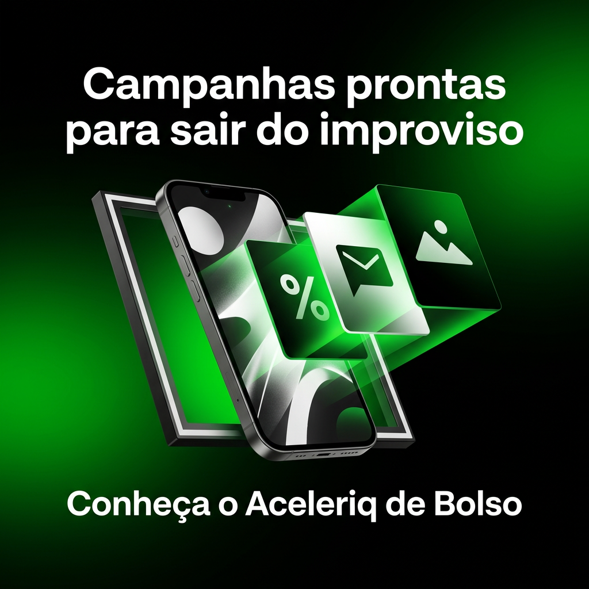
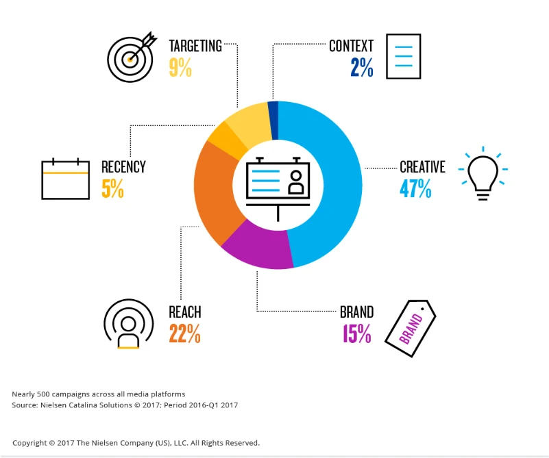
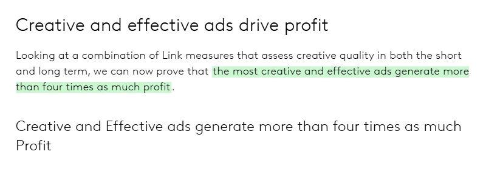
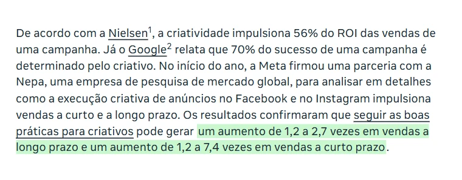
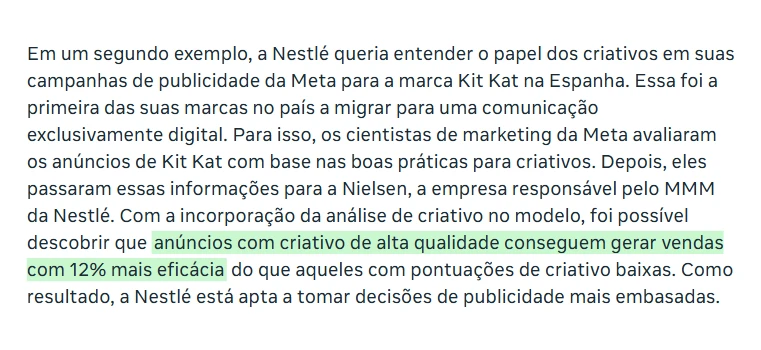
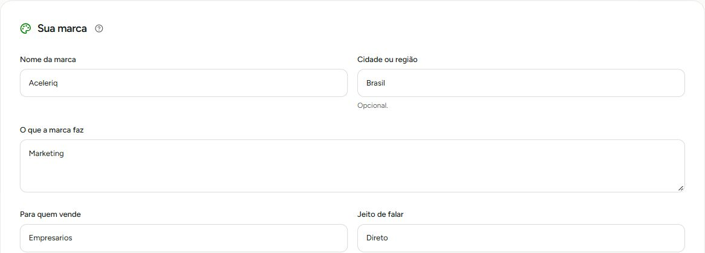
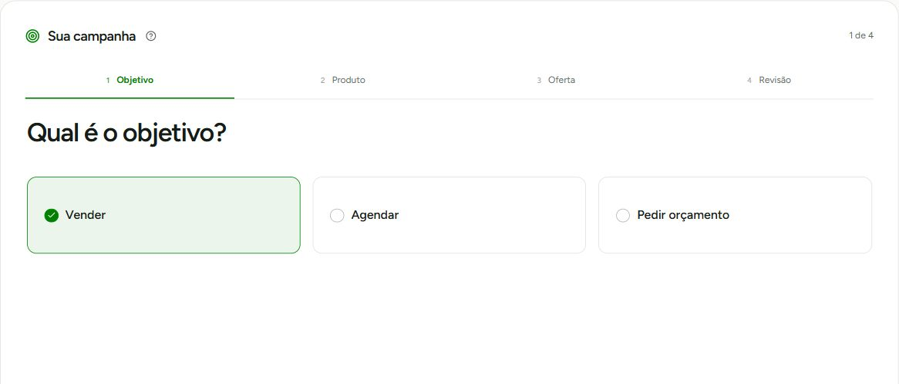
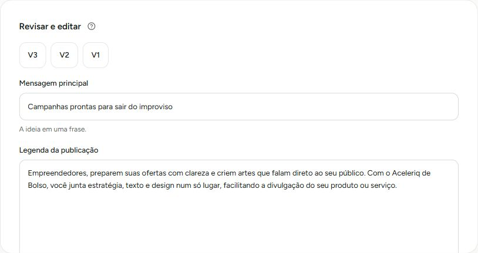

Uma arte bonita.
E quem curte é a sua tia.
- O preço não aparece.
- Não diz pra quem é.
- Não termina pedindo alguma coisa.
aceleriq de Bolso · Estúdio de campanhas
Na maioria das vezes não é culpa do algoritmo, nem da sua arte. É uma coisa que quase todo mundo pula antes de criar o post, e que toda agência séria faz primeiro. Desce a página que a gente te mostra o que é, e você vai olhar pro seu feed de um jeito diferente.
Não é falta de esforço, você sabe. Só que, se você olhar seus últimos posts com calma, vai ver que quase nenhum fala o preço, diz pra quem é ou termina pedindo alguma coisa. Aí o feed fica lindo, a curtida aparece, e o WhatsApp continua quieto. A arte estava fazendo a parte dela. Faltava o que vem antes dela.

Gerado no BolsoComparação de abordagem. A peça à direita foi gerada no estúdio; não é uma comparação de resultados de vendas.
As maiores empresas de pesquisa de mídia do mundo mediram o que faz uma propaganda vender. Público, alcance e horário contam, mas o que mais pesa é o criativo: a ideia, a mensagem e a arte juntas. A Nielsen viu também o outro lado: quando o criativo é fraco, a venda sai fraca, por melhor que seja a mídia.

47%
do aumento de vendas que a propaganda gera vem do criativo, o maior fator de todos. A segmentação de público, que muita gente acha que é o principal, ficou com 9%. Na atualização de 2023, o criativo seguiu na frente, com 49%.
Nielsen, quase 500 campanhas, 2017Ler o estudo

mais de4x
mais lucro. É o que geram os anúncios mais criativos e eficazes, numa análise que cruzou cerca de 450 anúncios com o retorno real das campanhas.
Kantar e WARC, 2023Ler o estudo

até7,4x
mais vendas no curto prazo para anúncios no Facebook e no Instagram que seguem boas práticas de criativo. No longo prazo, o ganho foi de 1,2 a 2,7 vezes.
Meta e Nepa, 2022Ler o estudo

12%
mais eficientes em vender. Foi o resultado dos anúncios de Kit Kat na Espanha com criativo de alta qualidade, comparados aos de criativo fraco, na medição da Meta com a Nielsen.
Meta, Nestlé e Nielsen, 2022Ler o caso
Os prints são dos artigos originais; o destaque em verde é nosso. Toque em qualquer print pra abrir o artigo. Esses estudos analisaram campanhas de grandes anunciantes e mostram o peso do criativo nas vendas; não são resultados do aceleriq de Bolso.
Quase todo mundo começa pelo visual e torce pra ele vender. Na agência a gente faz ao contrário, e o Bolso te leva pelo mesmo caminho: você responde as perguntas certas sobre o seu negócio, e é com essas respostas que o texto e a arte são montados. Por isso os dois falam a mesma coisa.
Ver isso na práticaProduto, preço, pra quem é e o que você tem de diferente. Aquilo que você já explica no balcão, organizado do jeito que convence quem nunca ouviu falar de você.
A mensagem puxa o benefício que pesa pro seu cliente, responde a dúvida que trava a compra e fecha com um pedido claro: chamar no WhatsApp, agendar, comprar.
Contraste, curiosidade e uma ideia visual que segura o dedo de quem está rolando o feed, pra pessoa parar e ler a oferta até o fim.
Você confere preço, condição e texto, ajusta o que quiser e baixa a peça pronta pra postar onde e quando preferir.
Estas peças foram criadas pela Aceleriq com o mesmo raciocínio do Bolso: uma imagem que pega o olho de surpresa e uma frase que dá motivo pra continuar lendo. Toque em qualquer uma pra ver de perto.
Não precisa entender de marketing nem saber escrever bonito. Você conta o que vende do jeito que conta pro cliente no balcão, e o estúdio transforma isso em mensagem, texto e arte, na ordem que a agência segue. Olha um exemplo do começo ao fim.
Nome, o que você faz, pra quem, o tom de voz e as cores. Fica salvo e vale pra todas as campanhas que você criar.
Vocêpreenche uma vez e pronto.

Escolha o objetivo e responda o básico: o produto, por que escolher você, a condição e o que a pessoa deve fazer. O estúdio não inventa preço, desconto nem prazo. Só entra o que você escreveu.
Vocêresponde com as suas palavras.

O Bolso escreve versões com a frase principal, o texto do post e a chamada pra ação. Você escolhe a que mais tem a sua cara, edita o que quiser ou escreve a sua.
Bolsoescreve as versões pra você escolher.

A arte já sai com a frase e a chamada da versão que você escolheu, no formato certo pra onde vai postar. Confere, baixa e publica onde quiser.
Bolsocria a arte no formato que você pedir.
Da sua marca à arte criada no estúdio. Toque nas imagens para ampliar.
Esta peça saiu da geração de imagem do Aceleriq de Bolso. Você revisa, baixa e posta onde quiser.
Ver a arte completa ↗Sem passar a noite no Canva trocando cor, sem copiar post de concorrente, sem aquela sensação de estar postando por postar. Você abre o Bolso, conta o que quer vender naquela semana e sai com a mensagem, o texto e a arte apontando pro mesmo lugar: a pessoa chamar você. E quando alguém perguntar o preço no direct, vai ser porque o post fez o trabalho dele.
Uma agência costuma cobrar por mês bem mais do que o Bolso custa no ano todo. Aqui você leva a mesma ordem de trabalho que a gente usa com os clientes da Aceleriq e para de depender de inspiração na hora de postar. Faz a conta: quanto vale um cliente novo pro seu negócio? Pra muita gente, um só já paga o ano inteiro.
Acesso anual
Do que você vende até a peça pronta pra postar, na ordem que faz o post vender.
R$ 97/ano
Parcele no cartão.
Texto: 1 crédito · Imagem: 5 créditos.
Recargas avulsas quando você precisar.
Garantia de 7 dias. Não gostou, devolvemos 100%.
Entra, monta as suas campanhas e vê com os seus próprios olhos. Se em até 7 dias você achar que o Bolso não é pra você, é só pedir e a gente devolve 100% do que você pagou. Sem pergunta, sem letra miúda e sem cara feia. Quem corre o risco aqui somos nós, não você.
Vai. Você só responde sobre o seu negócio, com as palavras que já usa pra explicar pra um cliente. A parte de transformar isso em oferta, mensagem e arte é o trabalho do Bolso.
Porque o Canva te dá a arte e o ChatGPT te dá um texto, mas nenhum dos dois começa perguntando o que você vende, pra quem e por que alguém compraria de você. O Bolso começa por aí, e é isso que faz o texto e a arte falarem a mesma coisa em vez de cada um ir pra um lado.
R$ 97 por 12 meses de acesso, com 100 créditos iniciais, e você pode parcelar no cartão. Os R$ 8,08 por mês são só o valor do ano dividido por 12 pra você comparar, não o valor da parcela.
Você pode recarregar: 50 créditos por R$ 19, 150 por R$ 49 ou 350 por R$ 97. Texto usa 1 crédito e imagem usa 5. Editar manualmente e baixar não consome créditos. A recarga adiciona saldo e não renova o acesso anual.
O que você vende, pra quem, o que tem de diferente e a condição da oferta, como preço, prazo ou bônus. Se você consegue explicar seu produto pra um cliente no balcão, já tem o suficiente pra começar.
Ele monta a oferta, a mensagem, o texto do post e a arte estática da sua campanha. Vídeo, publicação automática e gestão de anúncios não entram, esses são serviços da agência.
Não, o Bolso é um estúdio pra você usar sozinho, no seu tempo. Se um dia quiser a equipe da Aceleriq cuidando de tudo, isso é um serviço separado.
Você. Antes de postar, confere o texto, a arte e as condições da oferta. Onde e quando publicar continua sendo decisão sua.
Você tem 7 dias, a partir da compra, pra usar o Bolso e decidir. Se não gostar, é só pedir o reembolso e você recebe 100% do valor de volta, sem precisar explicar o motivo. Além de ser a nossa garantia, isso também é um direito seu pelo Código de Defesa do Consumidor.
Não, e desconfie de quem garante. Venda também depende do produto, do preço, de quantas pessoas veem o post e de como você atende quem chama. O que o Bolso faz é tirar do caminho o erro mais comum, que é postar sem uma oferta clara.
Você já faz a parte difícil, que é ter um produto bom. Agora falta o post contar isso do jeito certo. São R$ 97 pelo ano inteiro, com 7 dias de garantia: se não for pra você, devolvemos tudo.
Quero meu acesso por R$ 97 ao ano